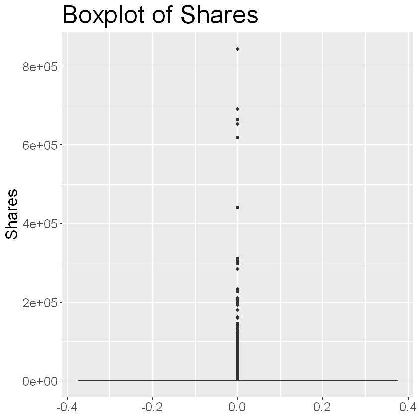

# Assuming your kernel autoinstalled renv, uncomment the following code
# to install the rest of the packages
# renv::restore()Exploratory Data Analysis
library(renv)
library(GGally)
library(tidymodels)
library(tidyverse)
library(leaps)
library(caret)
library(boot)
library(pROC)
library(repr)
library(glmnet)
Attaching package: 'renv'
The following objects are masked from 'package:stats':
embed, update
The following objects are masked from 'package:utils':
history, upgrade
The following objects are masked from 'package:base':
autoload, load, remove
Loading required package: ggplot2
Registered S3 method overwritten by 'GGally':
method from
+.gg ggplot2
── Attaching packages ────────────────────────────────────── tidymodels 1.1.1 ──
✔ broom 1.0.5 ✔ rsample 1.2.0
✔ dials 1.2.0 ✔ tibble 3.2.1
✔ dplyr 1.1.4 ✔ tidyr 1.3.0
✔ infer 1.0.6 ✔ tune 1.1.2
✔ modeldata 1.3.0 ✔ workflows 1.1.4
✔ parsnip 1.2.0 ✔ workflowsets 1.0.1
✔ purrr 1.0.2 ✔ yardstick 1.3.0
✔ recipes 1.0.10
── Conflicts ───────────────────────────────────────── tidymodels_conflicts() ──
✖ purrr::discard() masks scales::discard()
✖ dplyr::filter() masks stats::filter()
✖ dplyr::lag() masks stats::lag()
✖ purrr::modify() masks renv::modify()
✖ recipes::step() masks stats::step()
✖ recipes::update() masks renv::update(), stats::update()
• Search for functions across packages at https://www.tidymodels.org/find/
── Attaching core tidyverse packages ──────────────────────── tidyverse 2.0.0 ──
✔ forcats 1.0.0 ✔ readr 2.1.4
✔ lubridate 1.9.3 ✔ stringr 1.5.1
── Conflicts ────────────────────────────────────────── tidyverse_conflicts() ──
✖ readr::col_factor() masks scales::col_factor()
✖ purrr::discard() masks scales::discard()
✖ dplyr::filter() masks stats::filter()
✖ stringr::fixed() masks recipes::fixed()
✖ dplyr::lag() masks stats::lag()
✖ purrr::modify() masks renv::modify()
✖ readr::spec() masks yardstick::spec()
ℹ Use the conflicted package (<http://conflicted.r-lib.org/>) to force all conflicts to become errors
Loading required package: lattice
Attaching package: 'caret'
The following objects are masked from 'package:yardstick':
precision, recall, sensitivity, specificity
The following object is masked from 'package:purrr':
lift
Attaching package: 'boot'
The following object is masked from 'package:lattice':
melanoma
Type 'citation("pROC")' for a citation.
Attaching package: 'pROC'
The following objects are masked from 'package:stats':
cov, smooth, var
Loading required package: Matrix
Attaching package: 'Matrix'
The following objects are masked from 'package:tidyr':
expand, pack, unpack
Loaded glmnet 4.1-8
articles <- read_csv('data/OnlineNewsPopularity.csv')Rows: 39644 Columns: 61
── Column specification ────────────────────────────────────────────────────────
Delimiter: ","
chr (1): url
dbl (60): timedelta, n_tokens_title, n_tokens_content, n_unique_tokens, n_no...
ℹ Use `spec()` to retrieve the full column specification for this data.
ℹ Specify the column types or set `show_col_types = FALSE` to quiet this message.ggplot(data = articles) +
geom_boxplot(aes(y = shares)) +
labs(title = "Boxplot of Shares") +
ylab(label = 'Shares') +
theme(axis.title = element_text(size = 20), axis.text = element_text(size = 15), title = element_text(size = 25))
summary(articles$shares)
sd(articles$shares) Min. 1st Qu. Median Mean 3rd Qu. Max.
1 946 1400 3395 2800 843300
11626.9507486517
The target variable is centered at 1400, while the spread is quite large, with a standard deviation of 11627. Therefore, we will adjust our work from regression to classification to determine whether an article will be popular. Our definition of an article being popular would to be above average, so an article will be classified as popular if its above 1400 shares, and will not be popular if below 1400.
articles_temp <- articles
drop_columns <- c('url')
articles_temp <- articles_temp[, !(names(articles_temp) %in% c(drop_columns))]#, one_hot_columns))]
articles_temp <- articles_temp |> mutate('shares' = ifelse(shares >= 1400, 1 , 0))
articles_clean <- articles_tempwrite.csv(articles_clean, 'data/clean_Articles.csv')set.seed(2024)
articles_clean$ID <- 1:nrow(articles_clean)
training_articles <- articles_clean |> slice_sample(prop = 0.7)
testing_articles <- anti_join(articles_clean, training_articles, by = "ID")
training_articles <- training_articles[, !(names(training_articles) %in% c('ID'))]
testing_articles <- testing_articles[, !(names(testing_articles) %in% c('ID'))]
head(training_articles, 3)
nrow(training_articles)
head(testing_articles, 3)
nrow(testing_articles)| timedelta | n_tokens_title | n_tokens_content | n_unique_tokens | n_non_stop_words | n_non_stop_unique_tokens | num_hrefs | num_self_hrefs | num_imgs | num_videos | ⋯ | min_positive_polarity | max_positive_polarity | avg_negative_polarity | min_negative_polarity | max_negative_polarity | title_subjectivity | title_sentiment_polarity | abs_title_subjectivity | abs_title_sentiment_polarity | shares |
|---|---|---|---|---|---|---|---|---|---|---|---|---|---|---|---|---|---|---|---|---|
| <dbl> | <dbl> | <dbl> | <dbl> | <dbl> | <dbl> | <dbl> | <dbl> | <dbl> | <dbl> | ⋯ | <dbl> | <dbl> | <dbl> | <dbl> | <dbl> | <dbl> | <dbl> | <dbl> | <dbl> | <dbl> |
| 317 | 9 | 549 | 0.4935305 | 1 | 0.6827586 | 8 | 7 | 2 | 0 | ⋯ | 0.03333333 | 1 | -0.2941358 | -0.8 | -0.125 | 0.5 | 0.5 | 0.0 | 0.5 | 1 |
| 338 | 9 | 452 | 0.5193622 | 1 | 0.6000000 | 18 | 1 | 13 | 0 | ⋯ | 0.10000000 | 1 | -0.2171875 | -0.4 | -0.050 | 0.0 | 0.3 | 0.5 | 0.3 | 1 |
| 584 | 7 | 1361 | 0.3924890 | 1 | 0.6248237 | 8 | 3 | 1 | 1 | ⋯ | 0.03333333 | 1 | -0.2574653 | -1.0 | -0.050 | 0.5 | 0.5 | 0.0 | 0.5 | 1 |
27750
| timedelta | n_tokens_title | n_tokens_content | n_unique_tokens | n_non_stop_words | n_non_stop_unique_tokens | num_hrefs | num_self_hrefs | num_imgs | num_videos | ⋯ | min_positive_polarity | max_positive_polarity | avg_negative_polarity | min_negative_polarity | max_negative_polarity | title_subjectivity | title_sentiment_polarity | abs_title_subjectivity | abs_title_sentiment_polarity | shares |
|---|---|---|---|---|---|---|---|---|---|---|---|---|---|---|---|---|---|---|---|---|
| <dbl> | <dbl> | <dbl> | <dbl> | <dbl> | <dbl> | <dbl> | <dbl> | <dbl> | <dbl> | ⋯ | <dbl> | <dbl> | <dbl> | <dbl> | <dbl> | <dbl> | <dbl> | <dbl> | <dbl> | <dbl> |
| 731 | 9 | 255 | 0.6047431 | 1 | 0.7919463 | 3 | 1 | 1 | 0 | ⋯ | 0.03333333 | 0.7 | -0.1187500 | -0.125 | -0.1000000 | 0 | 0 | 0.5 | 0 | 0 |
| 731 | 9 | 211 | 0.5751295 | 1 | 0.6638655 | 3 | 1 | 1 | 0 | ⋯ | 0.10000000 | 1.0 | -0.4666667 | -0.800 | -0.1333333 | 0 | 0 | 0.5 | 0 | 1 |
| 731 | 9 | 285 | 0.7441860 | 1 | 0.8415301 | 4 | 2 | 0 | 21 | ⋯ | 0.16000000 | 1.0 | -0.3378889 | -0.700 | -0.1000000 | 1 | -1 | 0.5 | 1 | 1 |
11894
write.csv(training_articles, 'data/training_data.csv')
write.csv(testing_articles, 'data/testing_data.csv')Going to fit an initial linear model using all attributes to receive a baseline ordinary model for logistic regression. Using logistic regression since our target variable is a classification problem, and not a regression problem.
article_logistic_regression <- glm(shares ~ ., data = training_articles, family = binomial)
summary(article_logistic_regression)
Call:
glm(formula = shares ~ ., family = binomial, data = training_articles)
Coefficients: (2 not defined because of singularities)
Estimate Std. Error z value Pr(>|z|)
(Intercept) -1.845e+02 1.562e+03 -0.118 0.905980
timedelta 7.715e-06 8.787e-05 0.088 0.930032
n_tokens_title -2.600e-03 6.455e-03 -0.403 0.687091
n_tokens_content 7.275e-05 5.219e-05 1.394 0.163391
n_unique_tokens -6.154e-01 4.315e-01 -1.426 0.153765
n_non_stop_words 6.883e-01 1.501e+00 0.459 0.646503
n_non_stop_unique_tokens -1.409e-01 3.655e-01 -0.386 0.699815
num_hrefs 7.598e-03 1.583e-03 4.800 1.58e-06 ***
num_self_hrefs -1.479e-02 4.323e-03 -3.420 0.000625 ***
num_imgs 1.542e-03 2.038e-03 0.757 0.449320
num_videos -1.821e-03 3.629e-03 -0.502 0.615827
average_token_length -1.171e-01 5.467e-02 -2.142 0.032166 *
num_keywords 3.981e-02 8.343e-03 4.772 1.83e-06 ***
data_channel_is_lifestyle -6.642e-02 8.997e-02 -0.738 0.460339
data_channel_is_entertainment -3.268e-01 5.669e-02 -5.764 8.21e-09 ***
data_channel_is_bus -2.114e-01 8.695e-02 -2.432 0.015029 *
data_channel_is_socmed 8.607e-01 8.806e-02 9.774 < 2e-16 ***
data_channel_is_tech 5.490e-01 8.375e-02 6.555 5.56e-11 ***
data_channel_is_world 9.159e-02 8.452e-02 1.084 0.278505
kw_min_min 1.591e-03 3.717e-04 4.280 1.87e-05 ***
kw_max_min -2.123e-06 1.676e-05 -0.127 0.899225
kw_avg_min -3.193e-05 1.056e-04 -0.302 0.762422
kw_min_max -4.584e-07 2.565e-07 -1.787 0.073939 .
kw_max_max -2.732e-07 1.342e-07 -2.036 0.041796 *
kw_avg_max -6.735e-07 1.912e-07 -3.522 0.000428 ***
kw_min_avg -1.018e-04 1.754e-05 -5.806 6.41e-09 ***
kw_max_avg -9.206e-05 6.108e-06 -15.071 < 2e-16 ***
kw_avg_avg 7.402e-04 3.514e-05 21.064 < 2e-16 ***
self_reference_min_shares 1.327e-06 2.361e-06 0.562 0.573945
self_reference_max_shares 4.627e-07 1.092e-06 0.424 0.671851
self_reference_avg_sharess 3.107e-06 2.972e-06 1.045 0.295877
weekday_is_monday -7.420e-01 6.089e-02 -12.185 < 2e-16 ***
weekday_is_tuesday -8.355e-01 6.015e-02 -13.890 < 2e-16 ***
weekday_is_wednesday -8.605e-01 6.012e-02 -14.314 < 2e-16 ***
weekday_is_thursday -7.824e-01 6.026e-02 -12.983 < 2e-16 ***
weekday_is_friday -5.813e-01 6.226e-02 -9.336 < 2e-16 ***
weekday_is_saturday 2.261e-01 7.826e-02 2.889 0.003866 **
weekday_is_sunday NA NA NA NA
is_weekend NA NA NA NA
LDA_00 1.843e+02 1.562e+03 0.118 0.906059
LDA_01 1.833e+02 1.562e+03 0.117 0.906568
LDA_02 1.830e+02 1.562e+03 0.117 0.906724
LDA_03 1.833e+02 1.562e+03 0.117 0.906567
LDA_04 1.837e+02 1.562e+03 0.118 0.906371
global_subjectivity 9.756e-01 1.898e-01 5.140 2.75e-07 ***
global_sentiment_polarity 1.451e-01 3.707e-01 0.391 0.695527
global_rate_positive_words -5.165e+00 1.595e+00 -3.239 0.001199 **
global_rate_negative_words 7.258e+00 3.101e+00 2.341 0.019239 *
rate_positive_words 1.937e-01 1.471e+00 0.132 0.895241
rate_negative_words -6.100e-01 1.481e+00 -0.412 0.680432
avg_positive_polarity -4.376e-01 3.045e-01 -1.437 0.150651
min_positive_polarity -5.430e-01 2.551e-01 -2.129 0.033292 *
max_positive_polarity 6.292e-02 9.605e-02 0.655 0.512453
avg_negative_polarity -1.472e-01 2.822e-01 -0.522 0.601949
min_negative_polarity 4.424e-02 1.037e-01 0.427 0.669729
max_negative_polarity 1.820e-01 2.332e-01 0.780 0.435107
title_subjectivity 6.445e-02 6.155e-02 1.047 0.295094
title_sentiment_polarity 2.035e-01 5.659e-02 3.596 0.000323 ***
abs_title_subjectivity 2.124e-01 8.168e-02 2.600 0.009321 **
abs_title_sentiment_polarity 8.032e-02 8.926e-02 0.900 0.368215
---
Signif. codes: 0 '***' 0.001 '**' 0.01 '*' 0.05 '.' 0.1 ' ' 1
(Dispersion parameter for binomial family taken to be 1)
Null deviance: 38357 on 27749 degrees of freedom
Residual deviance: 34601 on 27692 degrees of freedom
AIC: 34717
Number of Fisher Scoring iterations: 8# Code adapted from UBC STAT 301 Lectures 12/13, Gabriela V. Cohen Freue 2022
misclassification_rate <- function(y, p.hat){
y_hat <- round(p.hat, 0)
error_rate <- sum(abs(y - y_hat) == 1) / length(y_hat)
return(error_rate)
}
cv_logistic <-
cv.glm(
glmfit = article_logistic_regression,
data = training_articles,
K = 10,
cost = misclassification_rate)
cv_logistic$delta[1]Warning message in predict.lm(object, newdata, se.fit, scale = 1, type = if (type == :
"prediction from rank-deficient fit; attr(*, "non-estim") has doubtful cases"
Warning message in predict.lm(object, newdata, se.fit, scale = 1, type = if (type == :
"prediction from rank-deficient fit; attr(*, "non-estim") has doubtful cases"
0.34645045045045
Our training error is 0.346, which is large. The large training error could be due to multiple factors, such as the underlying distribution. Due to the amount of parameters, each case is likely to have an unique set of attribute values so it becomes more difficult for the model
articles_pred_class <-
round(predict(article_logistic_regression, newdata = training_articles, type = 'response'), 0)
head(articles_pred_class)- 1
- 1
- 2
- 1
- 3
- 1
- 4
- 0
- 5
- 1
- 6
- 0
articles_conf_mat <-
confusionMatrix(
data = as.factor(articles_pred_class),
reference = as.factor(training_articles$shares)
)
articles_conf_matConfusion Matrix and Statistics
Reference
Prediction 0 1
0 7890 4459
1 5100 10301
Accuracy : 0.6555
95% CI : (0.6499, 0.6611)
No Information Rate : 0.5319
P-Value [Acc > NIR] : < 2.2e-16
Kappa : 0.3062
Mcnemar's Test P-Value : 5.911e-11
Sensitivity : 0.6074
Specificity : 0.6979
Pos Pred Value : 0.6389
Neg Pred Value : 0.6689
Prevalence : 0.4681
Detection Rate : 0.2843
Detection Prevalence : 0.4450
Balanced Accuracy : 0.6526
'Positive' Class : 0
TODO
Using our ordinary model as well as the training data, we predict whether an article is popular or not. Then we use that along with the true values for the confusion matrix, which shows …
options(repr.plot.width = 8, repr.plot.height = 8)
ROC_full_log <- roc(
response = training_articles$shares,
predictor = predict(article_logistic_regression, type = 'response')
)
plot(ROC_full_log,
print.auc = TRUE, col = 'blue', lwd = 3, lty = 2,
main = 'ROC Curves for Article Dataset'
)Setting levels: control = 0, case = 1
Setting direction: controls < cases

auc_tibble <- tibble(Model = 'Full Model', AUC = as.double(ROC_full_log$auc))
auc_tibble| Model | AUC |
|---|---|
| <chr> | <dbl> |
| Full Model | 0.7091242 |
The AUC for the model is 0.709, meaning that there is 70.9% chance that our model will be able to identify between a popular and unpopular article.
Since we have multiple attributes, we wish to find the most significant attributes that contribute the most to the amount of shares an article receives. We will do so using forward selection by way of the tidymodels package.
model_mat_X_train <-
model.matrix(object = article_logistic_regression, data = training_articles)[, -1]
model_mat_Y_train <-
as.matrix(training_articles$shares, ncol = 1)articles_cv_lambda_lasso <-
cv.glmnet(
x = model_mat_X_train, y = model_mat_Y_train,
alpha = 1,
family = 'binomial',
type.measure = 'auc',
nfolds = 5
)
articles_cv_lambda_lasso
Call: cv.glmnet(x = model_mat_X_train, y = model_mat_Y_train, type.measure = "auc", nfolds = 5, alpha = 1, family = "binomial")
Measure: AUC
Lambda Index Measure SE Nonzero
min 0.0002829 62 0.7062 0.002039 52
1se 0.0028952 37 0.7042 0.002144 38articles_lambda_1se_AUC_LASSO <- round(articles_cv_lambda_lasso$lambda.1se, 4)articles_LASSO_1se_AUC <- glmnet(
x = model_mat_X_train, y = model_mat_Y_train,
alpha = 1,
family = "binomial",
lambda = articles_lambda_1se_AUC_LASSO
)
sum((coef(articles_LASSO_1se_AUC)[, 1] != 0) == TRUE)
39
auc_tibble <- auc_tibble |> add_row(Model = 'lasso', AUC = articles_cv_lambda_lasso$cvm[articles_cv_lambda_lasso$index["1se",]])auc_tibble| Model | AUC |
|---|---|
| <chr> | <dbl> |
| Full Model | 0.7091242 |
| lasso | 0.7042183 |
The lasso model has slightly less area under the curve, however it uses 36 input variables instead of the 60 the full model uses, which is more efficient to compute.